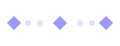
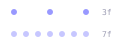

Squash and stretchWeight and flex
02AnticipationThe wind-up
03
StagingLights, camera
04
Straight ahead and pose to poseTwo ways to work
05Follow through and overlapParts settle late
06Slow in and slow outEasing
07ArcCurved paths
08Secondary actionSupporting moves
09
TimingFrames make weight
10ExaggerationPush it further
11AppealWhy we care
12Solid drawingForm and volume